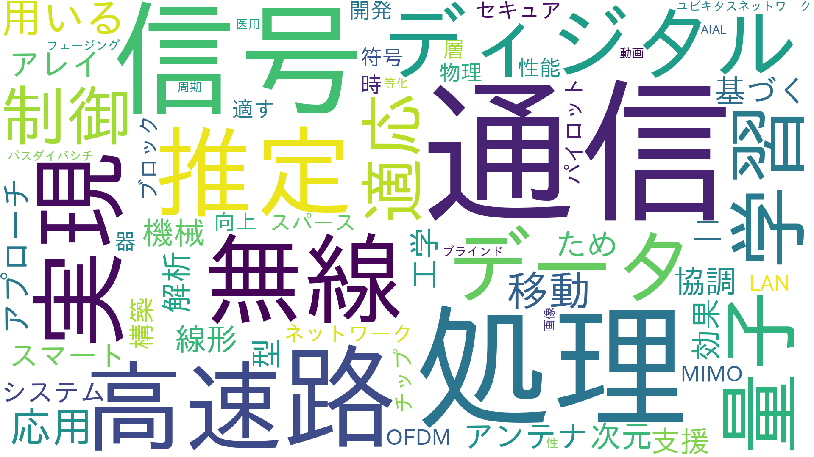

ENTRANCE
LAB
確率的情報処理研究室
教員 : 大野 修一（教授），中島 重義（准教授）
時間をインデックスとしたデータの系列を時系列あるいは信号と呼びます．時系列と信号は情報学や工学だけでなく，さまざな分野で現われます．たとえば，為替変動などの経済データも時系列です．時系列から有益な情報を得たり将来の値を予測する研究を行っています．この研究には時系列からモデルを作成する機械学習を利用します．また，将来の高性能な情報通信のための信号処理技術を開発しています．
ワードクラウドを見てみよう！

学生のコメント：
分子通信というワードが大きく見えています．
分子通信とは，タンパク質やDNAを含む化学物質を伝送することで情報伝達とともに化学反応も起こせるぞ，という注目の集まる技術です．
中野先生の人柄の良さから，後期の通信基盤の講義を履修している学生も多いのではないでしょうか．
またTran Thi Hong先生はブロックチェーンを専門としており，こちらも現在注目の集まる分野ですね．